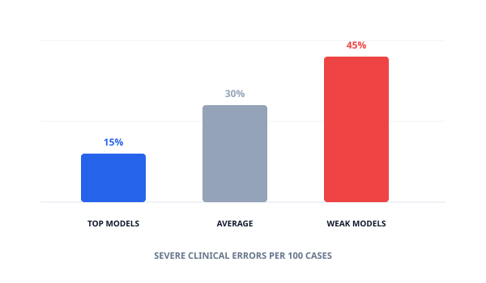
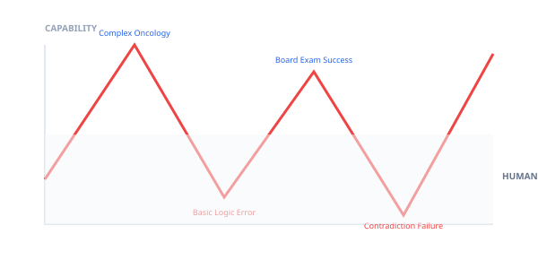
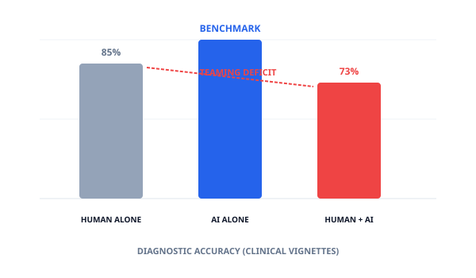

In January 2026, the ARISE network released the first State of Clinical AI Report. For anyone leading product at a firm like Philips Healthcare Informatics, the data is sobering. We have reached a point where model intelligence is no longer the primary bottleneck—evaluation and integration are.
While the industry celebrates over 1,200 FDA-cleared AI tools, the report found that only a fraction have been evaluated in peer-reviewed, randomized controlled trials. This is Making Tech in its most challenging form: we know the models are "smart," but we don't know how they behave in a messy, real-world clinical environment.
1. The 15% Error Floor
The ARISE researchers tested 31 Large Language Models against 100 primary care consultations across 10 specialties. Even the top-performing models committed 12 to 15 severe clinical errors per 100 patients. The worst models exceeded 40.
These aren't just typos; they are errors in diagnosis, treatment planning, and safety. In a clinical setting, a 15% failure rate isn't an "edge case", it could be a systemic liability.

Fig 1.1: The Reliability Gap, 15% error rate is the "Best Case" scenario?
2. Why User-Centricity is the only Safety Net
The report highlights a critical failure in current AI implementation: Automation Bias. Surprisingly, physicians working with AI often performed worse than the AI alone. Why? Because clinicians tend to defer to the machine's "confidence," losing their own diagnostic vigilance.
This is where End-User Centric Innovation becomes critical. We cannot simply "add AI" to a clinician's screen. We must design for Human-AI Teaming. The report explicitly calls for prioritizing Human-Computer Interaction (HCI) as a primary outcome in clinical trials.

Fig 1.2: The Jagged Frontier — AI excels at exams but fails at "simple" clinical logic.
Designing for Skepticism
For a clinician at the bedside, "appropriate trust" is the goal. A user-centric design approach in 2026 must focus on:
- Transparent Reasoning: Don't just show the answer; show the "Chain of Thought" so the clinician can audit the logic in seconds.
- Strategic Friction: If a model is uncertain, the UI should be "harder" to use, forcing the human to pause and verify.
- Workflow Relief over Advice: The report found clinicians value AI most when it handles administrative weight (scribing, inbox management), not just when it offers a diagnosis.
The Blunt Reality for HealthTech Leaders
If your product roadmap focuses on "increasing AI accuracy" from 85% to 90%, it could be solving the wrong challenge. The 2026 winner will be the platform that makes the 15% error rate safe through superior HCI and workflow integration.
3. The "Jagged Frontier" of Clinical Logic
Models exhibit what researchers call a "jagged frontier." They can answer a complex board-exam question about a rare disease perfectly, but then fail to recognize a basic contradiction in a patient's medication list.
This is a Cognitive Ergonomics problem. If the user doesn't know where the frontier ends, they will fall over the cliff. As a product leader, my focus is on mapping these frontiers so the end-user knows exactly when to lead and when to follow.

Fig 2.1: The Teaming Deficit — When AI assistance reduces human clinical vigilance.
Bottom Line
The bottleneck for 2026 is not more compute; it is Deliberate Orchestration. We must stop building roadmaps for machines and start building a vision for people. In the high-stakes world of healthcare informatics, the user interface isn't just a layer—it is the safety net.
Strategic UX and End-User Audit
Are you building for "Appropriate Trust"? Let's talk about your Clinical AI-UX strategy to ensure your team is delivering products for people safely.
Discuss End-User Innovation & UX